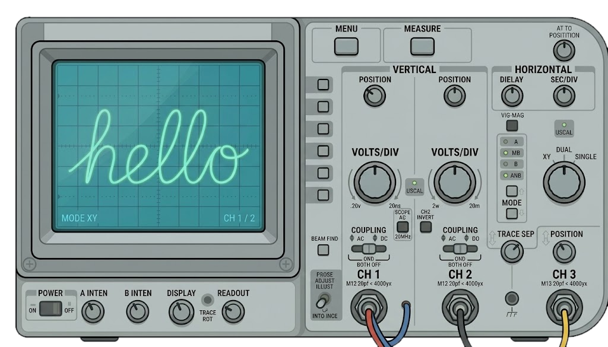
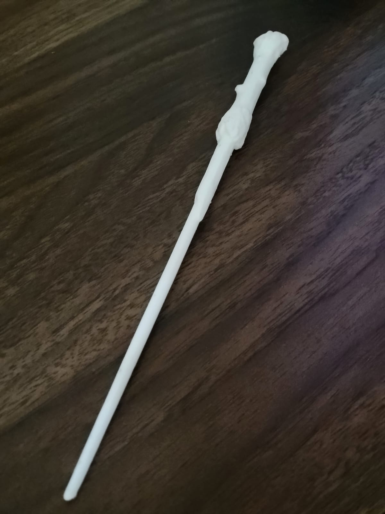
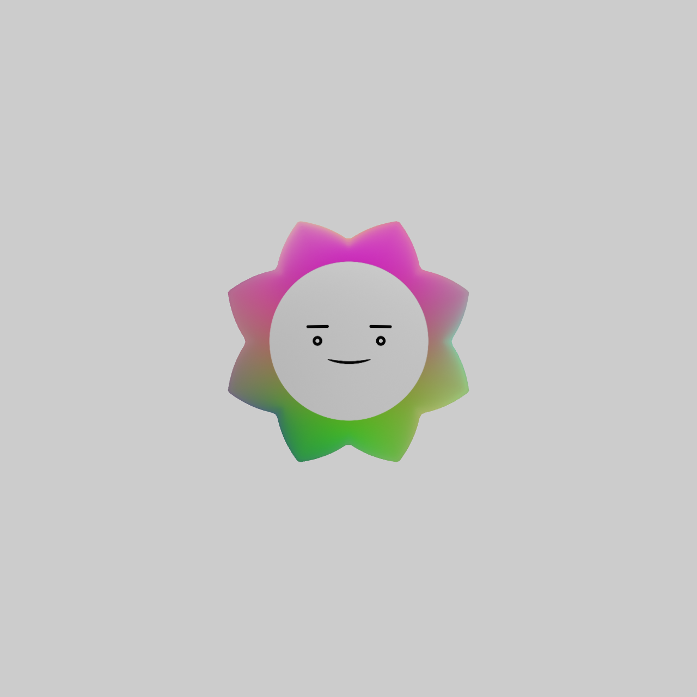

Welcome to the lab.

I’m Yehya, an Electrical Engineer fascinated by mathematics and physics, and by turning them into things I can build. From embedded electronics to control and interactive systems, I enjoy stepping into unfamiliar problems and learning what it takes to make them work.
Projects

Fuzzy Logic Controller
MATLAB · Simulink · Control

Smart GameBoard
Embedded Systems · 3D Printing · LED Control

Magic Wand
Machine Learning · Gesture Recognition · Python
Projects
Magic Wand
Machine Learning · Gesture Recognition · Python
Smart GameBoard
Embedded Systems · 3D Printing · LED Control

Motor System Identification
MATLAB · Simulink · Control

Audio Reactive Avatar
TouchDesigner · Audio Processing · Interactive Systems
Fuzzy Logic Controller
MATLAB · Simulink · Control
About Me
I’m an Electrical Engineer with a deep passion for mathematics and physics. I’ve always been fascinated by the way these subjects can describe the world around us, and studying engineering gave me the opportunity to turn that fascination into something I could build and experiment with.
Along the way, I developed an analytical mindset that changed the way I approach problems. I enjoy breaking complex ideas down, understanding how their pieces fit together, and then finding a way to bring them to life.
I’m especially drawn to new ideas and unfamiliar problems. My projects have taken me across different worlds from embedded electronics to interactive technologies.
I enjoy the process of stepping into something I don’t know, learning what it takes to make it work, and discovering where the idea can go. There is always something new to learn, something new to build, and another question worth exploring—and that’s what keeps me curious.
If you have an idea worth exploring, or simply want to say hello, I’d love to hear from you.